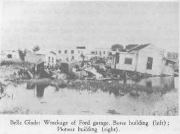

The Okeechobee Hurricane of 1928
The Flood That Changed Florida

Roughly seventy-five percent of those who died were migrant farmworkers, most of them Black or Bahamian.
The Okeechobee Hurricane left at least 2,500 people dead in Florida. Many victims were migrant farmworkers living behind a low earthen levee south of the lake. It became Florida’s deadliest hurricane, exposing the vulnerability of these communities and the unequal treatment of survivors and victims.
A Storm That Crossed an Ocean
The storm began as a tropical depression off West Africa on September 6, 1928. On September 12 it struck Guadeloupe as a Category 4, killing roughly 1,200. The next day it reached Puerto Rico as a Category 5 with winds near 160 miles per hour, destroying nearly 25,000 homes and leaving half a million people homeless. It made landfall near West Palm Beach on the evening of September 16 with winds near 145 miles per hour, destroying 1,711 homes and 268 businesses in the city. The worst was forty miles inland.
A Dike Built of Mud
The rich muck soil south of Lake Okeechobee had drawn thousands of farmers and farmworkers; a 1945 newspaper estimate placed about 5,000 migrant workers there in 1928, many living in shacks and tents. The lake’s southern dike, built between 1923 and 1925, stood only about five feet high and was made of ordinary earth. The 1926 Great Miami Hurricane had already breached the shoreline at Moore Haven.
When the Lake Came Over the Land
On September 16, eighteen inches of rain fell in twenty-four hours on a lake already saturated by a wet summer. The hurricane’s winds drove the lake’s water against its southern shore, and around nine that evening the dike gave way near Belle Glade. Floodwaters reportedly reached twelve feet within an hour and eventually as much as twenty feet in Belle Glade, Chosen, Pahokee, South Bay, Canal Point, and Bean City. Between Clewiston and Canal Point, roughly six thousand people lived and worked; nearly half did not survive the night. Zora Neale Hurston drew on the disaster for her 1937 novel Their Eyes Were Watching God.
A Death Toll the Country Took Decades to Count
Most victims were migrant farmworkers with no consistent local records. The American Red Cross estimate of 1,836 dead stood for decades. In 2003, after burial records were reconciled, the National Weather Service revised the toll to “at least” 2,500, and some officials suggested the real number may have reached 3,000. The workforce whose labor had made the land profitable paid the heaviest price.
What Happened to the Dead
Floodwaters lingered for weeks, and officials made an explicit racial distinction in handling the dead. White victims received coffins and a formal burial at Woodlawn Cemetery in West Palm Beach. Black victims and bodies of unidentified race were stacked and burned in open pyres, then bulldozed into unmarked mass graves. About 1,600 bodies went into a grave at Port Mayaca; 674 more at what is now 25th Street and Tamarind Avenue in West Palm Beach; smaller sites held victims at Miami Locks, Ortona, and Sebring. Survivors, almost entirely Black, were ordered to do the recovery work, often at gunpoint and unpaid.
Decades Without a Headstone
The West Palm Beach site stayed unmarked for most of a century; in the 1950s the city paved 25th Street over part of the burial trench. Advocacy by West Palm Beach resident Robert Hazard and groups like the Sankofa Society finally brought a memorial in 2003, and the site was listed on the National Register of Historic Places as the Hurricane of 1928 African-American Mass Burial Site. Port Mayaca received a preservation grant in 2012.
A Dike Named for a President
The Florida Legislature created the Okeechobee Flood Control District, and after President Herbert Hoover inspected the ruined communities, the Army Corps of Engineers drafted a plan for channels, gates, and a large levee system. The Herbert Hoover Dike, completed in stages through the late 1960s, now runs about 143 miles with a maximum height of 41 feet. A $1.8 billion reinforcement project from 2005 to 2022 added a continuous underground cutoff wall.
Quick Facts
| Formed | September 6, 1928, off the west coast of Africa |
|---|---|
| Caribbean toll | Guadeloupe: about 1,200 dead; Puerto Rico: Category 5, about 160 mph |
| Florida landfall | Near West Palm Beach, evening of September 16, about 145 mph |
| The failed dike | Earthen levee about 5 feet high, built 1923–1925 |
| Flood depth | Up to 20 feet south and east of the lake |
| Death toll | At least 2,500 (2003 federal revision); some estimates 3,000 |
| Who died | About 75 percent migrant farmworkers, mostly Black or Bahamian |
| Burial sites | Port Mayaca (~1,600); West Palm Beach (674); Miami Locks, Ortona, Sebring |
| Policy legacy | Okeechobee Flood Control District; Herbert Hoover Dike |
Did You Know?
The National Weather Service did not revise the official death toll until 2003, seventy-five years after the storm.
The Herbert Hoover Dike stretches about 143 miles around nearly the entire lake.
Zora Neale Hurston’s 1937 novel Their Eyes Were Watching God draws directly on the disaster.
Vocabulary
Dike: an earthen wall built to hold back water.
Migrant farmworker: a laborer who travels to follow seasonal agricultural work.
Cutoff wall: a continuous underground barrier built inside a dike to stop seepage.
Discussion Questions
1. How did the lack of records on migrant workers make the true death toll so hard to count?
2. What does the treatment of the dead reveal about racial inequality in 1928 Florida?
Related Articles
FLH-0003 — The Great Miami Hurricane of 1926
Sources
NOAA Atlantic Oceanographic and Meteorological Laboratory. “90th Anniversary of Lake Okeechobee Hurricane.” aoml.noaa.gov
BlackPast.org. “Okeechobee Hurricane of 1928.” blackpast.org
Palm Beach County History Online. “The Hurricane of 1928.” education.pbchistory.org
Equal Justice Initiative. “On Sep 16, 1928: Hundreds of Black Victims of Hurricane Denied Proper Burial.” calendar.eji.org
Kleinberg, Eliot. Black Cloud: The Great Florida Storm of 1928. Florida Historical Society Press, 2016.
Neely, Wayne. The Great Okeechobee Hurricane of 1928. iUniverse, 2014.
American Red Cross. The West Indies Hurricane Disaster, September 1928. 1929.
Wikipedia. “1928 Okeechobee Hurricane” and related entries.